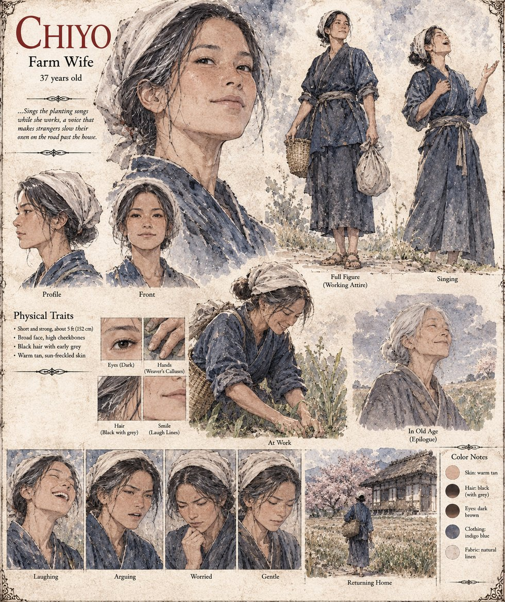

Chiyo
Farm wife · Isamu’s wife of fifteen years, Kiyo’s mother · sings the planting songs · 37 at her taking
The farm wife of the eastern edge, Isamu’s wife of fifteen years and Kiyo’s mother. She sings the planting songs while she works, in a voice that makes strangers slow their oxen on the road past the house; at her work she hums, pitched low enough to pass for private humming. The one long argument of the marriage is over row spacing: she asks Isamu, sideways, to plant his rows a half-hand wider the next spring.
At thirty-seven she is taken into six months of bonded service against the household’s debt, and the term is extended. The pack’s Prompt 6 draws her humming low over her work in a cell while Kiyo, three cells down, sings a quick song through the wall. She is among the some thirty held persons a man from a neighbouring village finds alive when the gates come down. She sings again by the following spring and dies in old age (Epilogue i).
The manuscript gives her no description, so the sheet is the pack’s. It makes her short and strong at about 5 ft (152 cm), broad through the shoulders, with a broad face, high cheekbones, laugh lines at the corners of the mouth, black hair with early grey at the temples tied up in a plain cloth, quick dark eyes, warm sun-freckled skin, weaver’s calluses on her fingertips, and an indigo hemp work robe with the sleeves tied back. Its expression panels are Laughing, Arguing, Worried and Gentle. Its scenes are a full figure in working attire with a basket and a cloth bundle; Singing; At Work, stooping in the field with a basket on her back; In Old Age (Epilogue), white-haired; and Returning Home, seen from behind and walking toward a thatched house beside a blossoming tree.
Case 4099 has a different Chiyo, the wet-nurse to its infant prince (42 on her sheet). The two are separate women on separate pages, and this slug carries the case number to keep them apart.